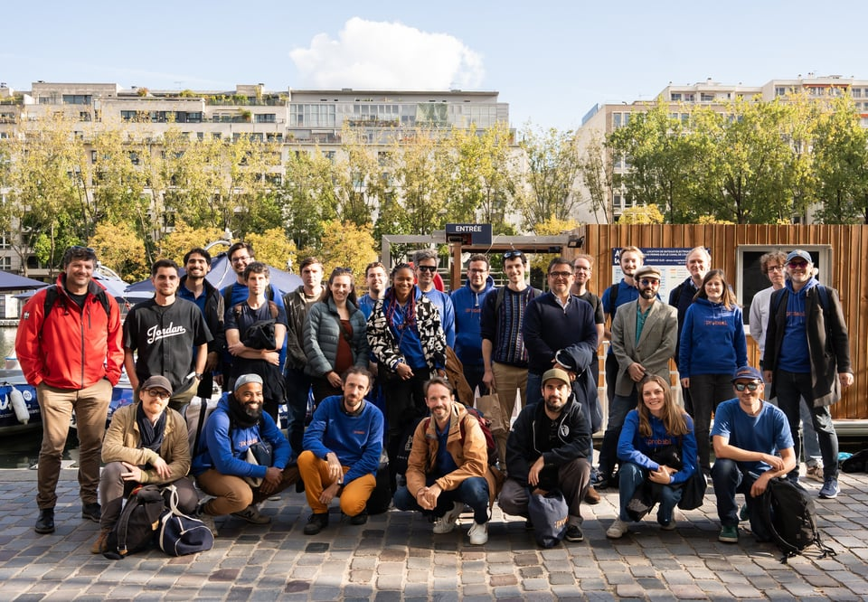
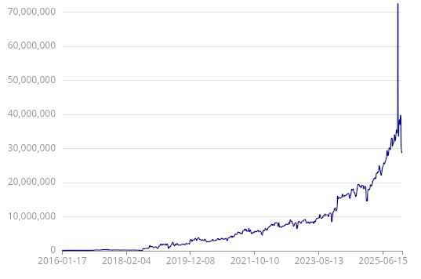

Note

Probabl’s get together, in falls 2025
I’m thrilled to announce that I’m stepping up as Probabl’s CSO (Chief Science Officer) to supercharge scikit-learn and its ecosystem, pursuing my dreams of tools that help go from data to impact.
Scikit-learn, a central tool
Scikit-learn is central to data-scientists’ work: it is the most used machine-learning package. It has grown over more than a decade, supported by volunteers’ time, donations, and grant funding, with a central role of Inria.

Scikit-learn download numbers; reproduce and explore on clickpy
And the usage numbers keep going up…
Scikit-learn keeps growing because it enables crucial applications: machine-learning that can be easily adapted to a given application. This type of AI does not make the headlines, but it is central to the value brought by data science. It is used across the board to extract insights from data and automate business-specific processes, thus ensuring function and efficiency of a wide variety of activities.
And scikit-learn is quietly but steadily advancing. The recent releases bring progress in all directions: computational foundations (the array API enabling GPU support), user interface (rich HTML displays), new models (eg HDBSCAN, temperature-scaling recalibration …), and always algorithmic improvements (release 1.8 brought marked speed ups to linear models or trees with MAE).
A new opportunity to boost scikit-learn and its ecosystem
Probabl recently raised a beautiful seed funding from investors who really understand the value and perspective of scikit-learn. We have a unique opportunity to accelerate scikit-learn’s development. Our analysis is that enterprises need dedicated tooling and partners to build best on scikit-learn, and we’re hard at work to provide this.
2/3rd of probabl’s founders are scikit-learn contributors and we have been investing in all aspects of scikit-learn: features, releases, communication, documentation, and training. In addition, part of scikit-learn’s success has always been to nurture an ecosystem, for instance via its simple API that has become a standard. Thus Probabl is not only consolidating scikit-learn, but also this ecosystem: the skops project, to put scikit-learn based models in production, the skrub project, that facilitates data preparation, the young skore project to track data science, fairlearn to help avoiding machine learning that discriminates, and more upstream projects, such as joblib for parallel computing.
My obsession as Probabl CSO: serving the data scientists
As CSO (Chief Science Officer) at Probabl, my role is to nourish our development strategy with understanding of machine learning, data science, and open source. Making sure that scikit-learn and its ecosystem are enterprise ready will bring resources for scikit-learn’s sustainability, enabling its ecosystem to grow into a standard-setting platform for the industry, that continues to serve data scientists. This mission will require consolidating the existing tools and patterns, and inventing new ones.
Probabl is in a unique position for this endeavor: Our core is an amazing team of engineers with deep knowledge of data science. Working directly with businesses gives us an acute understanding of where the ecosystem can be improved. On this topic, I also profoundly enjoy working with people who have a different DNA than the historical DNA of scikit-learn, with product research, marketing, and business mindsets. I believe that the union of our different cultures will make the scikit-learn ecosystem better.
Beyond the Probabl team, we have an amazing community, with a broader group of scikit-learn contributors who do an amazing job bringing together what makes scikit-learn so versatile, with a deep ecosystem of Python data tools enriched by so many different actors. I’m deeply greatful to the many scikit-learn and pydata contributors. At Probabl, we are very attuned to enabling the open-source contributor community. Such a community is what enables a single tool, scikit-learn, to serve a long tail of diverse usages.